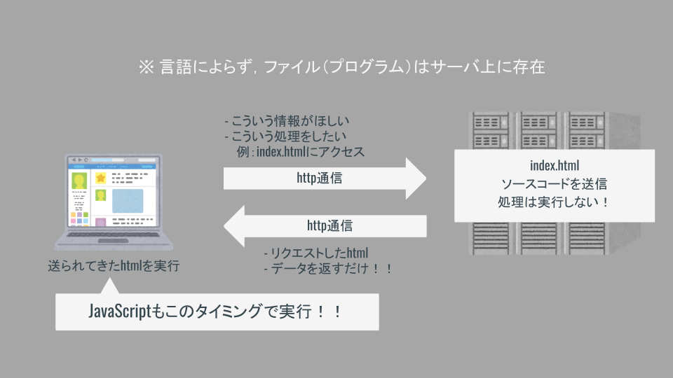

PHP概要
Webアプリケーションの仕組み（動き方）
Webアプリケーション（のソースコード）は世界のどこかにある「サーバ」に置かれている．

Webアプリケーションを使用するときは，Webブラウザに「URL」を指定する．
- Webブラウザから「http」方式でURLに「リクエスト」を送る．
- URLはWeb上にたくさんあるファイルを必ず1つ指定できるようになっている（ユニークな文字列）．
URLの構造は下記のようになっている．
https://www.emperor-crimson.com/data/status.php
^ ^ ^ ^
| | | |
scheme hostname（サーバ名） directory filename
サーバ - クライアント型のアプリケーション
サーバで動作する言語（サーバサイド）
サーバ上でプログラムが実行される．

- PHP
- Ruby
- Python
- JAVA
- Node.js
- etc...
クライアント（webブラウザ）で動作する言語（クライアントサイド）

webブラウザがプログラムを実行する．
- HTML
- CSS
- JavaScript
サーバサイドの役割
様々なWebアプリケーションが存在するが，基本のサーバサイド処理は同様である．
基本の機能は何らかのデータを扱うことである．
例
- twitter => ツイート，検索，タイムラインの表示，etc
- facebook => 投稿，検索，記事の更新，コメント，etc
- wordpress => ブログ記事の投稿，編集，削除，etc
※：アプリケーションは必ずしもPHPで作られているわけではない！！
💡 Key Point
上記の処理は以下の4つに集約される．
- 📝 データの「作成」（Create）
- 📖 データの「参照」（Read）
- 🔄 データの「更新」（Update）
- 🗑 データの「削除」（Delete）
これら4種類の処理の頭文字をとって「CRUD」と呼ぶ．